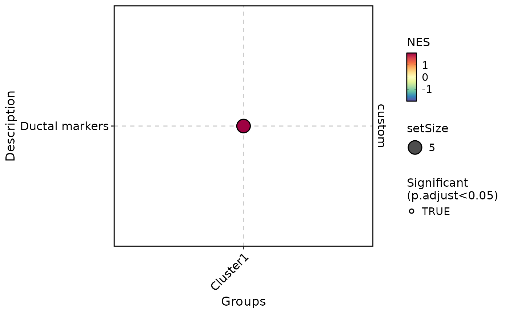

Perform the enrichment analysis (GSEA) on the genes
Usage
RunGSEA(
object = NULL,
group.by = NULL,
test.use = "wilcox",
DE_threshold = "p_val_adj < 0.05",
scoreType = "std",
geneID = NULL,
geneScore = NULL,
geneID_groups = NULL,
geneID_exclude = NULL,
IDtype = "symbol",
result_IDtype = "symbol",
species = "Homo_sapiens",
db = "GO_BP",
db_update = FALSE,
db_version = "latest",
db_combine = FALSE,
convert_species = TRUE,
Ensembl_version = NULL,
mirror = NULL,
features = NULL,
TERM2GENE = NULL,
TERM2NAME = NULL,
minGSSize = 10,
maxGSSize = 500,
unlimited_db = c("Chromosome", "GeneType", "TF", "Enzyme", "CSPA"),
GO_simplify = FALSE,
GO_simplify_cutoff = "p.adjust < 0.05",
simplify_method = "Wang",
simplify_similarityCutoff = 0.7,
verbose = TRUE,
...,
srt = NULL
)Arguments
- object
A
Seuratobject orSummarizedExperimentobject containing the results of differential expression analysis (RunDEtest()). If specified, the genes and groups will be extracted from the object automatically. If not specified, thegeneIDandgeneID_groupsarguments must be provided.- group.by
Metadata column(s) used to color cells.
- test.use
Test to be used in differential expression analysis. This argument is only used if
objectis specified.- DE_threshold
Filter condition for differential expression analysis. This argument is only used if
objectis specified.- scoreType
This parameter defines the GSEA score type. Possible options are "std", "pos", "neg". By default ("std") the enrichment score is computed as in the original GSEA. The "pos" and "neg" score types are intended to be used for one-tailed tests (i.e. when one is interested only in positive ("pos") or negateive ("neg") enrichment).
- geneID
Gene IDs.
- geneScore
A numeric vector that specifies the gene scores, for example, the log2(fold change) values of gene expression.
- geneID_groups
A factor vector specifying the group labels for each gene.
- geneID_exclude
Gene IDs to be excluded from the analysis.
- IDtype
Type of gene IDs in the
objectobject orgeneIDargument. This argument is used to convert the gene IDs to a different type ifIDtypeis different fromresult_IDtype.- result_IDtype
Desired type of gene ID to be used in the output. This argument is used to convert the gene IDs from
IDtypetoresult_IDtype.- species
"Homo_sapiens"or"Mus_musculus".- db
Character vector of database or resource selectors:
"GO","GO_BP","GO_CC","GO_MF","KEGG","WikiPathway","Reactome","CORUM","MP","DO","HPO","PFAM","Chromosome","GeneType","Enzyme","TF","CSPA","Surfaceome","SPRomeDB","VerSeDa","TFLink","hTFtarget","TRRUST","JASPAR","ENCODE","MSigDB","CellTalk","CellChat","CytoTRACE2"or"MSigDB_<collection>". A vector may combine sources. See the corresponding preparation function for source-specific settings.- db_update
Force a refresh.
FALSEloads the cache when available.- db_version
Database version to retrieve.
- db_combine
Whether to combine multiple databases into one. If
TRUE, all database specified bydbwill be combined as one named "Combined".- convert_species
Use a species-converted database when the annotation is missing for
species.- Ensembl_version
Ensembl version.
NULLuses the latest.- mirror
Specify an Ensembl mirror to connect to. The valid options here are
"www","uswest","useast","asia".- features
A named list of feature lists for custom enrichment gene sets. If provided, it takes precedence over
TERM2GENEanddb.- TERM2GENE
A data frame specifying the gene-term mapping for a custom database. The first column should contain the term IDs, and the second column should contain the gene IDs.
- TERM2NAME
A data frame specifying the term-name mapping for a custom database. The first column should contain the term IDs, and the second column should contain the corresponding term names.
- minGSSize
The minimum size of a gene set to be considered in the enrichment analysis.
- maxGSSize
The maximum size of a gene set to be considered in the enrichment analysis.
- unlimited_db
Names of databases that do not have size restrictions.
- GO_simplify
Whether to simplify the GO terms. If
TRUE, additional results with simplified GO terms will be returned.- GO_simplify_cutoff
Filter condition for simplification of GO terms. This argument is only used if
GO_simplifyisTRUE.- simplify_method
Method to be used for simplification of GO terms. This argument is only used if
GO_simplifyisTRUE.- simplify_similarityCutoff
The similarity cutoff for simplification of GO terms. This argument is only used if
GO_simplifyisTRUE.- verbose
Whether to print the message. Default is
TRUE.- ...
Passed to helper functions.
- srt
Deprecated alias for
object; supply exactly one of the two. It will be removed in scop 1.0.0.
Value
If input is a Seurat object, returns the modified Seurat object with the enrichment result stored in the tools slot. If input is a geneID vector with or without geneID_groups, return the enrichment result directly. Enrichment result is a list with the following component:
enrichment: A data.frame containing all enrichment results.results: A list ofgseaResultobjects from the DOSE package.geneMap: A data.frame containing the ID mapping table for input gene IDs.input: A data.frame containing the input gene IDs and gene ID groups.DE_threshold: A specific threshold for differential expression analysis (only returned if input is a Seurat object).
Examples
Restored example output generated on 2026-10-10 from SCOP 151e7134c. These historical examples have not been revalidated against the current release. Current usage and arguments are documented above.
term2gene <- data.frame(
Term = c(
rep("Endocrine markers", 5),
rep("Exocrine markers", 5),
rep("Ductal markers", 5)
),
symbol = c(
"INS", "GCG", "SST", "IAPP", "PCSK1",
"PRSS1", "CPA1", "CELA3A", "REG1A", "CTRB1",
"KRT19", "SOX9", "MUC1", "CFTR", "KRT7"
)
)
genes <- unique(term2gene$symbol)
scores <- seq_along(genes)
names(scores) <- genes
gsea_out <- RunGSEA(
geneID = genes,
geneScore = scores,
geneID_groups = rep("Cluster1", length(genes)),
TERM2GENE = term2gene,
minGSSize = 2
)
#> ℹ [2026-10-10 12:57:22] Start GSEA analysis
#> ! [2026-10-10 12:57:22] All values in the `geneScore` are greater than zero. Set scoreType = 'pos'
#> ℹ [2026-10-10 12:57:22] Preparing custom GSEA database from `TERM2GENE`/`TERM2NAME` ...
#> ℹ [2026-10-10 12:57:22] Prepared 15 ranked gene rows after ID mapping.
#> ℹ [2026-10-10 12:57:22] Running GSEA for 1 group/database combination(s) ...
#> ℹ [2026-10-10 12:57:22] Running GSEA: group "Cluster1", database "custom", genes 15 ...
#> ℹ [2026-10-10 12:57:23] Finished GSEA: group "Cluster1", database "custom".
#> ✔ [2026-10-10 12:57:23] GSEA analysis done
GSEAPlot(
res = gsea_out,
db = "custom",
plot_type = "comparison"
)
